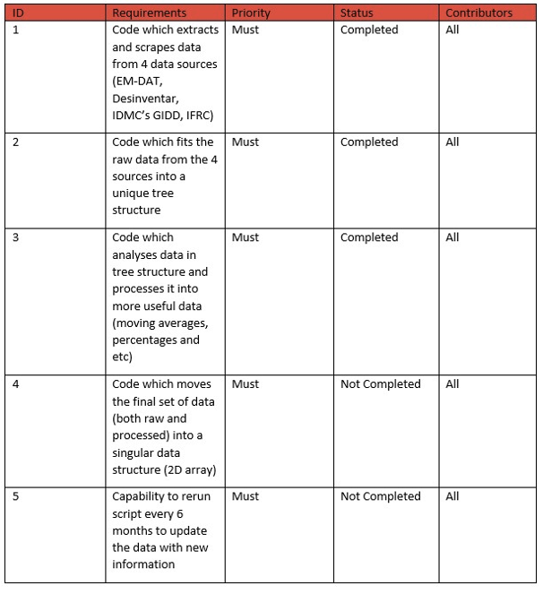

Week 2
11th October 2022
The first 2 weeks were spent focusing on gathering requirements from our clients, clearing up any ambiguities and doing research with regards to HCI. We spent time discussing the type of people who would benefit from our work to help us better understand exactly what our project deliverables should be (seen below).


We came up with the following MoSCoW list:
We will begin looking through the data sets and try to understand how they are formatted to help us begin our code which scrapes and clean the data sets.
Week 4
25th October 2022
We noticed that a lot of the data sets were not in English, so we noted that we had to deal with translating these words during the scraping process.
We began writing code which would clean the raw data and move it into separate csv files locally and merge all the data into a singular data file.
We had discussions and did some research and ultimately decided on a unique tree structure to store our merged data from all 4 data sources.

We are going to complete both the data cleaning code and the code which situates all the data from the sources into a singular data frame. We will continue to consistently update Justin on our progress.
Week 8
22nd November 2022
We completed the data scraping code and the code which merges all the data into a singular data frame (our unique tree structure).
{kind=link}
We realised we had to ensure our data sets and categories were compatible with our sister group (group 5). To achieve this, we had meetings together to ensure we had matching categories and compatible code.
{kind=link}
Once we got that out of the way. We focused on starting the design of the data processor module. We started by researching what type of distribution to represent the data in. We decided to use a normal distribution to represent the disaster data so we could calculate the standard deviation so we could calculate outliers.
Take part in a meeting, with our client (Justin Ginetti) and two other UN data scientists, to ask for advise on our take of processing the data and how to analyse it to get useful statistical data.
Week 10
7th February 2023
After some consideration, we decided that it would be too time consuming for us to learn how to implement a zero inflated negative binomial distribution in our analysis. Therefore, we decided to use bootstrapping to shape the data we have to a normal distribution.
Our next step is to start researching how to make calculations based off a zero inflated negative binomial distribution and continue pushing onward with the design of the analysis module.
Week 12
21st February 2023
After some consideration, we decided that it would be too time consuming for us to learn how to implement a zero inflated negative binomial distribution in our analysis. Therefore, we decided to use bootstrapping to shape the data we have to a normal distribution (as seen in the test data below).

We are making good progress in our data processing module. Our next step is to finish writing the data processing and visualisation code. We also plan to have a code run-through with Justin Ginetti in the coming two weeks.
Week 14
7th March 2023
We had our code run-through with Justin (mostly discussing our data analysis code). In these two weeks, we have neared completion of our data analysis code and have begun drafting our data visualisation code.
We will complete the data analysis and data visualisation code in the final weeks.
Week 16
21st March 2023
In the final two weeks it was crunch time, we completed our analysis code and held a code runthrough session with our client on Teams.
We will complete the data analysis and data visualisation code in the final weeks.
We then began and completed data visualisation which moved the data we had into a singular data frame (2D array). This is the final deliverable in our project!